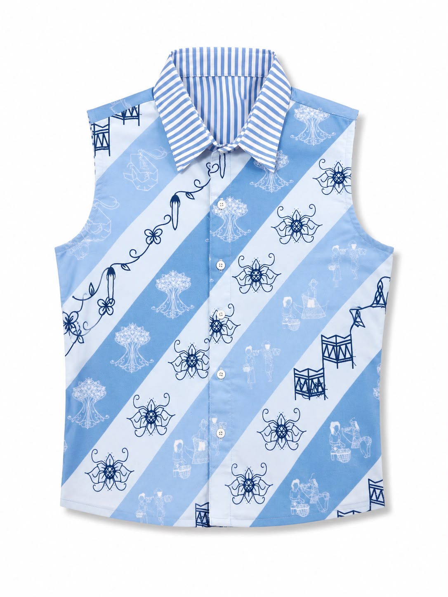
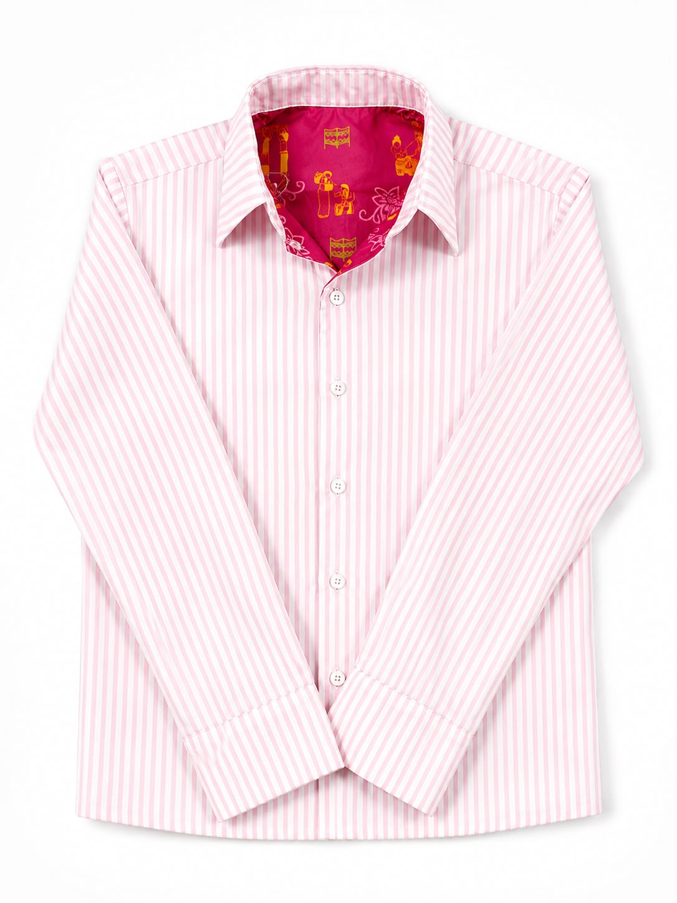
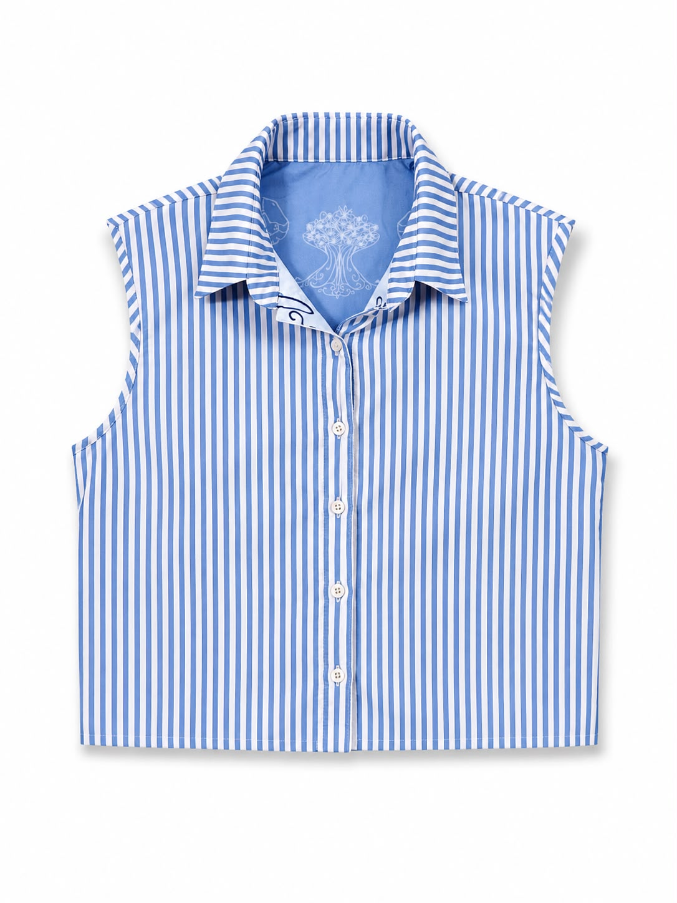
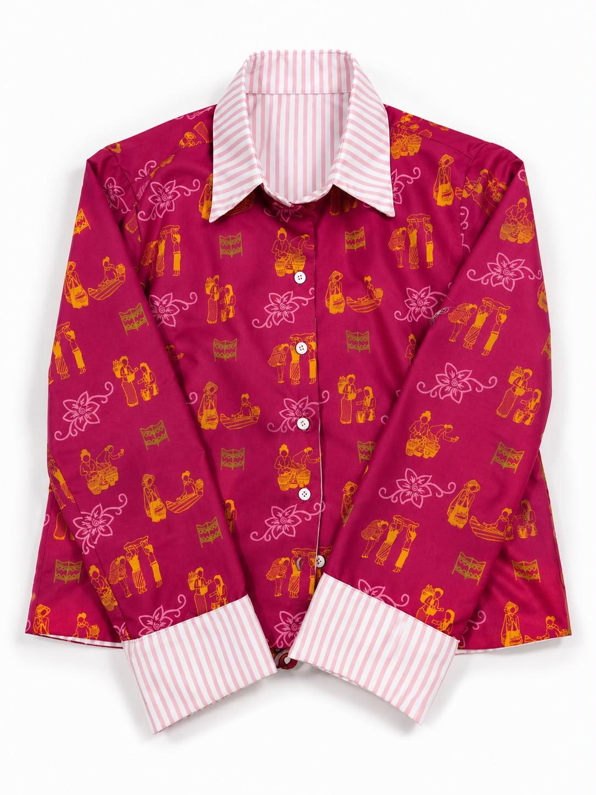

Paduan harmonis narasi tradisi Batik Damar Kurung khas Jawa Timur, keajaiban material serat daur ulang limbah tekstil, dan inovasi kancing magnetik modular. Kurangi konsumsi berlebih demi keselamatan bumi kita.
Limbah Terselamatkan
Air Bersih Dihemat
Hasilkan 4 Style
Gunakan panel kontrol di bawah kemeja ini
Didirikan oleh Marsya Nefertiti Lubis & Syahquitta Faihamanda Yusuf, NEVARA hadir menjawab keresahan darurat sampah industri pakaian (fast fashion) yang menghasilkan jutaan ton limbah merusak lingkungan.
Sistem 4-in-1 modular kami memungkinkan 1 pakaian bertransformasi menjadi kemeja formal, kemeja kasual, vest bermotif, atau vest stripes. Anda menghemat lemari dan pengeluaran pakaian secara signifikan.
Kami berkolaborasi dengan produsen inovatif Pable untuk mendaur ulang sisa-sisa kain perca katun dan polyester bekas menjadi bahan tenun premium yang siap pakai kembali tanpa pewarna kimia beracun.
Melestarikan kekayaan tradisi visual luhur Jawa Timur yang bercerita tentang kerja keras dan keindahan alam, menjadikannya relevan dan modis untuk generasi muda.
Sentuh dan klik kontrol di bawah ini untuk melihat bagaimana baju NEVARA berubah seketika. Rasakan inovasi kancing magnetik kami!
Sisi luar terbuat dari katun hasil mechanical upcycling oleh Pable bermotif Batik Damar Kurung digital print ramah lingkungan. Dilengkapi lengan panjang katun bermagnet yang menutup rapat di bahu namun sangat mudah dilepas kapan saja.
Kain katun & polyester sisa industri disortir dan dipilah dengan teliti.
Diproses secara mekanis menjadi serat benang temun baru tanpa bahan kimia pencemar air.
Dicetak menggunakan tinta tersertifikasi Oeko-Tex dengan motif batik Damar Kurung Jatim.
Masa pakai pakaian diperpanjang drastis, memutus rantai konsumsi berlebih mode cepat saji.
Di Indonesia, sekitar 2,3 juta ton limbah tekstil terbuang cuma-cuma di tahun 2021. NEVARA bertekad menjadi bagian dari solusi dengan memanfaatkan bahan upcycle berkualitas tinggi berstandar ramah lingkungan bersama mitra Pable Surabaya.
Mitra pemrosesan limbah perca mekanis menjadi serat tenun katun daur ulang ramah kulit.
Mencetak visual Damar Kurung presisi dengan tinta ramah lingkungan bebas racun logam.
Kami tidak hanya menjaga bumi (Planet) dan melestarikan budaya lokal, tapi juga melayani kebutuhan fungsional gaya hidup modern yang cerdas (People) serta membuka peluang industri sirkular yang menguntungkan (Profit).
Cukup geser jumlah kemeja NEVARA yang ingin Anda miliki atau pesan, dan lihat berapa banyak limbah dan air yang berhasil kita hemat bersama-sama dari kerusakan iklim bumi.
Kain sisa perca katun tidak jadi berakhir di pembuangan sampah TPA.
Mengurangi ekstraksi pasokan air bersih yang biasa digunakan katun biasa.
Membantu mengurangi kebiasaan belanja fast fashion impulsif.
Setiap goresan batik digital NEVARA menceritakan kisah filosofis luhur dan perjuangan keseimbangan hidup masyarakat Jawa Timur.
Desain ini menyoroti peran para ibu di Jawa Timur yang aktif menyokong ekonomi keluarga dengan pekerjaan (pagawean) sehari-hari penuh kesabaran dan ketulusan. Mulai dari berdagang di pasar tradisional, merajut, hingga mengasuh keluarga. NEVARA mendedikasikan desain ini agar perjuangan ganda para ibu selalu mendapat apresiasi luhur.
Menyoroti keindahan pesisir Jawa Timur serta pentingnya menjaga ekosistem hutan bakau (mangrove) yang terancam punah. Desain memadukan kekayaan flora-fauna mangrove (bunga lindur, daun semanggi, udang) dengan visualisasi kehidupan nelayan tangguh sekitar pesisir. Menjadi pengingat pentingnya menyayangi alam pantai Jatim.
Lihat lebih dekat kualitas material upcycle tenun Pable, jahitan, dan warna yang menawan secara nyata. Setiap karya adalah wujud nyata dari konsep berkelanjutan.




Visualisasi yang megah dari motif cetak saring merepresentasikan ketangguhan pekerja perempuan di Jawa Timur.
Kami memproduksi pakaian secara eksklusif berbasis Pre-Order terbatas untuk meminimalkan sisa stok kain berlebih. Hubungi tim kami dengan mengisi form berikut!
Terima kasih banyak telah mendukung sustainable fashion NEVARA. Halaman ini sedang dialihkan secara otomatis ke nomor WhatsApp Admin kami untuk konfirmasi pembayaran.
Apabila tidak teralihkan, silakan hubungi tim kami di @styledbynevara